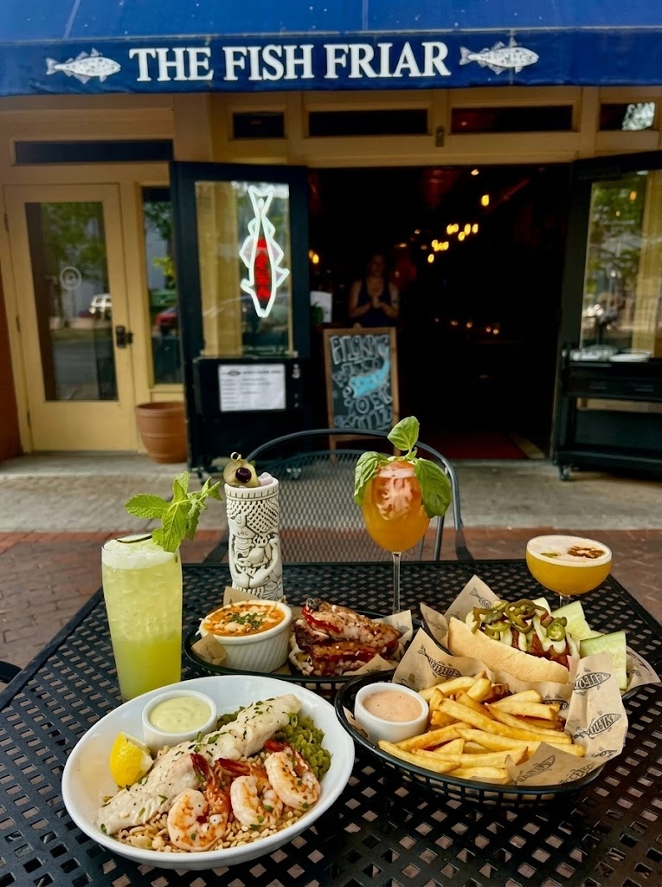

Food in Syracuse
Syracuse has many delicious food options. Visitors can enjoy local restaurants, famous salt potatoes, pizza, seafood, and food trucks.
Famous Syracuse Salt Potatoes

Salt potatoes are one of the most famous foods in Syracuse and Central New York. They are small potatoes boiled in heavily salted water. They have a soft and creamy inside and are usually served with melted butter.
Salt potatoes are especially popular during summer picnics, family gatherings, and barbecues.
Bull & Bear Roadhouse
Bull & Bear Roadhouse is a restaurant near Syracuse that serves loaded salt potatoes. They are topped with pulled pork, bacon, cheddar cheese, and sour cream.
Popular Restaurants
Apizza Regionale

Apizza Regionale is a popular restaurant in downtown Syracuse. It is known for its wood-fired pizza, pasta, and fresh ingredients.
The Fish Friar

The Fish Friar is a seafood restaurant in downtown Syracuse. It serves fish and chips, fried seafood, and other seafood dishes.
Popular Food Trucks
Food trucks are another fun way to enjoy food in Syracuse. They offer different types of food at local events, festivals, and outdoor locations.
Byblos Food Truck
Offers Middle Eastern food and different traditional dishes.
Toss & Fire
Known for wood-fired pizza and fresh ingredients.
Bold Coast Lobster
Offers seafood favorites, including lobster rolls.
Habibi's Halal Gyro
Offers halal food, gyros, and other popular street food options.